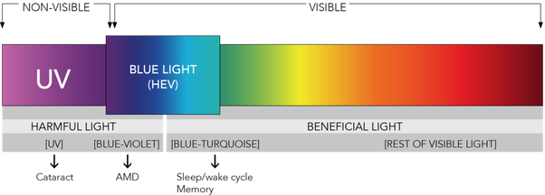
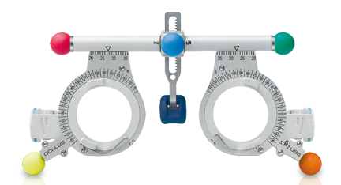

Filtrado de Luz Azul
La lente PreCel "Total Blue" ofrece a sus ojos una protección del 100 % contra los rayos UV y filtra la luz azul visible de alta energía dañina (HEV), lo que reduce el riesgo asociado con la exposición a largo plazo a los rayos UV y HEV, proveniente de dispositivos de pantalla y lámparas led.
Lentes graduadas (presbicia)
Descubre PreCel, productos de origen francés, fabricados bajo las más estrictas normas europeas (EN – clase 2). Se trata de gafas con armazones de acetato de celulosa y lentes de C39 antirreflejo, monofocales. Pueden contener un filtro azul si es de su preferencia. El material es duradero y resistente a los rayones.
Anteojos de sol
Todo el mundo sabe que es importante llevar gafas de sol en los días soleados, pero también es esencial llevarlas durante las horas normales del día, incluso cuando está nublado. La nieve refleja el 80% de los rayos UV del sol. En este caso, el resplandor del sol reflejado quema la córnea (quemadura de la córnea). Los anteojos PreCel poseen marcos de acetato de celulosa y ofrecen una protección UV del 100%.
Productos
filtros